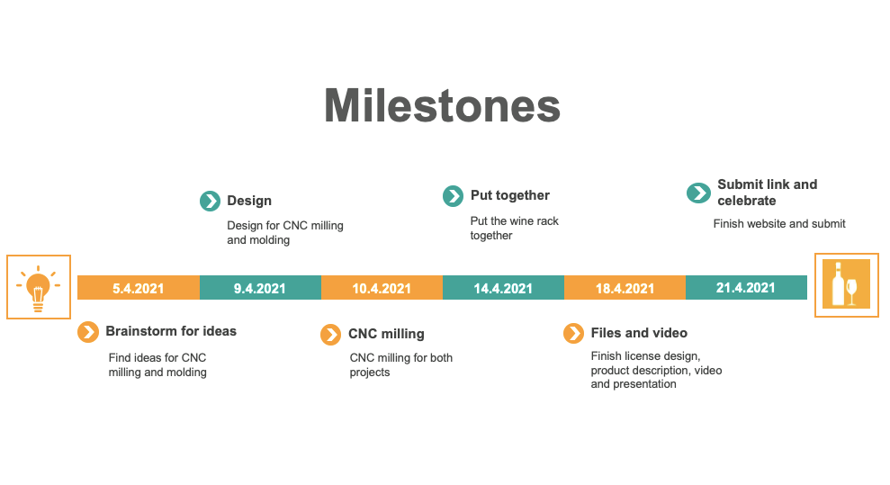

This is me.

Design, draw, prepare and mill a large object. Record “feeds and speeds” and prepare toolpaths. Document the project on a common website to which every group member can link to.
This group project was done by Guðjón Hrafn Þórarinsson, Sara Rós Alfreðsdóttir and Stefán Rafn Gunnarsson.
We started with each of us coming up with few ideas and on the first meeting we decided on making a wine shelf. Each of us had also made a design for the mold but Guðjón came up with the design for grapes, which we ended up executing. Guðjón was in charge of design drawings, preparing toolpaths and record “feeds and speeds” for the wine shelf. Guðjón was also in charge of making the video. Sara was in charge of the project management, including writing the product description and making a licence. Stefán was in charge of making the mold for the grapes in Fusion 360, as well as preparing toolpaths and roughing and finishing. All members worked together on milling the wine shelf at Fablab, along with writing a text for the common website.
After deciding on a design, the project planning began. We decided to book a time at Fablab on the 10th of April, which gave us a push-start. After the milling we had 11 days left before submitting the assignment. Below is the planner we followed.
There were no major changes made during the project, except for tasks number 7 and 8 (“CNC milling for molding” and “Molding and casting”). Due to time constraints at Fablab we didn’t get to do the molding, but instead we 3D printed the grapes. Fortunately this did not affect the timeline. Below is a Gantt Chart made along with the project planner.
Furthermore there were a few milestones that needed to be achieved before executing some of the tasks. Following are the specified milestones.
Overall the outcome was beyond what we expected and we are very pleased with the final outcome.
Our final project was to design and make something large with CNC milling, After few hours of brainstorming we decided to make a wine shelf, since we all have a love for wine. The size of the wine shelf is 860x300x140 (mm) and is made with plywood. What makes our design unique are the grapes in the middle of the rack, together with the "RED" and "WHITE" engravings. In the next project we were supposed to create a mold for the grapes but due to lack of time we had to 3D print the design, which came out well. The grapes are fastened to the shelf with a cylinder which goes through a 14mm hole that was milled.
The creation of the cnc milled project follows the majority of the steps found in the laser cutting project. The process does however allow for interesting effects stemming from the drillbit used at the expense of various limitations. Most immediate limitation is the shear size of the main drill bit used.
The procedure of making the project is:

Due to the size of the main drill bit you need to make what are called dogbones or T-bones. This will compensate for the size of the drill bit when you need 90° corners but the drill won't allow it. A crucial factor to consider is that the drill bit is not exactly subtle. Going too fast, the wrong RPM, the chip size and depth per run, all these factors balance time versus quality. Material will be a large factor but if it's plywood like we used you will notice that it will rip out more material then you want. When smoothing it was important to go with the grain as it will tear out slivers of material if you go against it.
Our project was a wine shelf. Origin inspiration was a shelf made from an old wooden pallet
Taking the idea and refining it while adding in something only the cnc mill can do. The lettering turned out beautiful, despite minor issues. The fits were quite snug and needed a lot of sanding and work. Using a hand dremel, rasps and sandpaper the project came together nicely and it even had an insert in the front to allow for the next project (which was later 3D printed).
This is me.

This is a bridge.

Circular windows on a spherical building.
If there are any questions please contact me via email, phone or doves.